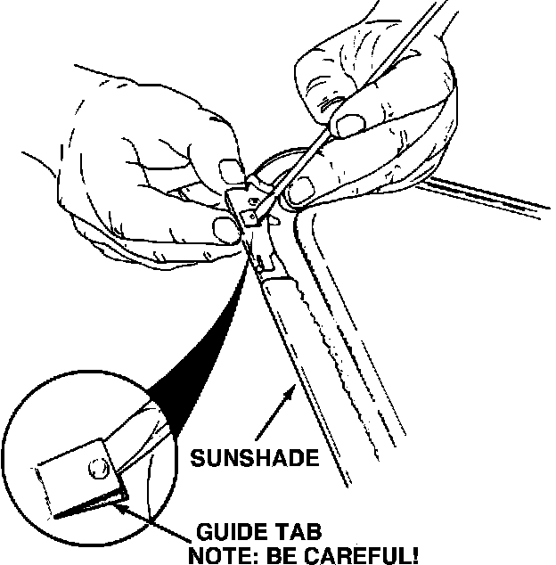
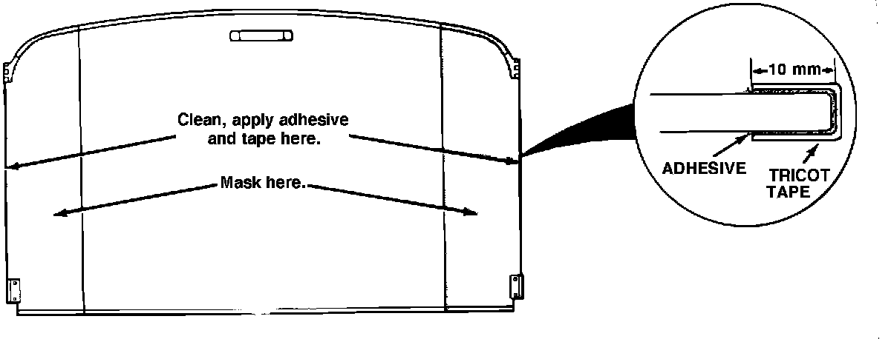
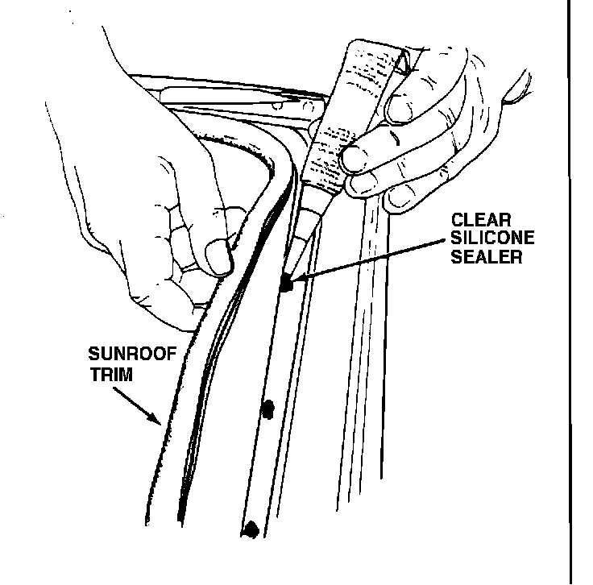
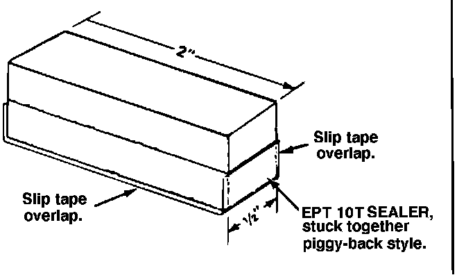
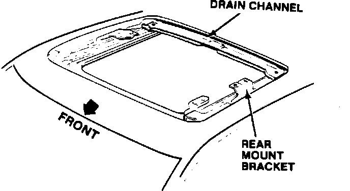
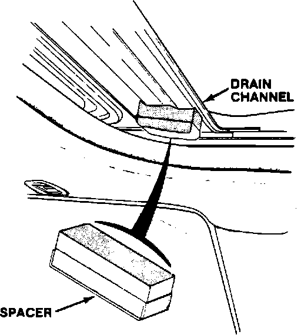

Sunshade - Rattle
88acura01March 9, 1988
YEAR MODEL APPLICATION
'86-88 LEGEND ALL
88-005
Sunshade Rattle (Supersedes 88-005, dated February 16, 1988)
SYMPTOM A rattle from the sunshade, most noticeable when driving on a rough road.
PROBABLE CAUSE The sunshade is loose in the guide rail.

CORRECTIVE ACTION
^ Reinforce the guide tab on each front corner of the sunshade with EPT sealer.
^ Apply Tricot tape to the outer edges of the sunshade.
^ On the '86 & 87 4-door only, install EPT "spacers" between the sunshade and the sunroof frame.
1. Remove the sunroof glass and sunshade, as described in the service manual.
NOTE: When removing the sunroof glass, make note of the number and position of the sunroof shims; reinstall them in their original positions.
2. Using a thin flat screwdriver, fit a small piece of EPT 3T sealer under the guide tab on each front corner of the sunshade, as shown.
CAUTION: Fit the EPT sealer carefully; the tab is plastic and easily broken.
3. Clean both sides of the sunshade using alcohol.
4. Mask off both sides of the sunshade 10 mm from the edge.
5. Apply 3M Plastic & Emblem Adhesive (3M part number 08061), or equivalent to both sides of the sunshade, then remove the masking.

6. Remove the backing from tricot tape and carefully wrap the tape around both edges of the sunshade as shown.

7. Pull back the front edge of the Sunroof Trim and apply several light dabs of clear silicone sealer on the top forward edge of the sunroof frame. Clean any excess sealer off the frame.
CAUTION: Do not allow the sealer to mar the headliner.
8. On the Legend Coupe, reinstall the sunroof shade and the sunroof glass.
NOTE: Steps 9 through 12 apply to the '86 & 87 4-door only:

9. Make two "spacers" out of EPT sealer and sliptape. For each spacer, cut two 1/2" x 2" pieces of EPT 10T sealer and stick them together, piggyback style, as shown. Then install a length of sliptape over the "bottom" or non-adhesive part of the spacer.
NOTE: The slip-tape must he wider than the spacer and long enough to wrap halfway up the spacer at each end.

10. Position the sunroof drain channel fully forward.
NOTE: To move the drain channel forward, have an assistant hold up the front edge of each rear mount bracket while you move the sunroof mechanism with the sunroof wrench.

11. Remove the paper backing from the spacers and install one on each side of the drain channel, as near the corner as possible.
12. Reinstall the sunshade and sunroof glass.
PARTS INFORMATION
EPT Sealer, 3T: P/N 06990-SA5-000
EPT Sealer, 10T: P/N 06992-SA5-000
Slip-Tape: P/N 06994-SA5-000
Tricot Tape: P/N 71985-SF1-000 (2 pieces of Tricot tape needed)
WARRANTY CLAIM INFORMATION
Operation number: 814025
Flat rate time: 1.0 hour
Failed part P/N: 83210-SG0-A00ZA
Defect code: 043
Contention code: B07